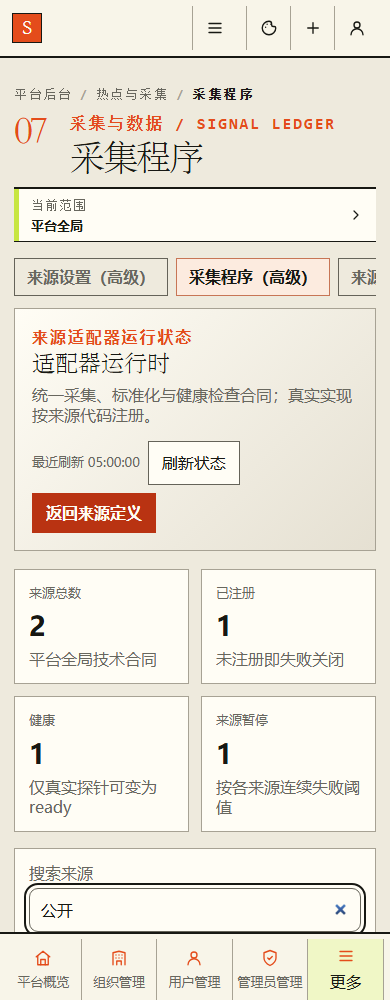
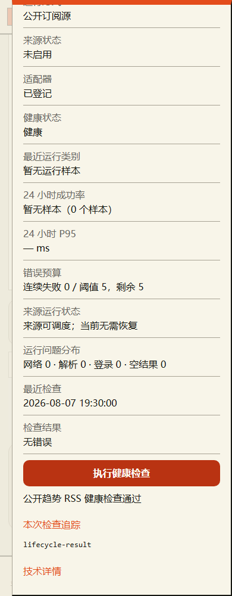
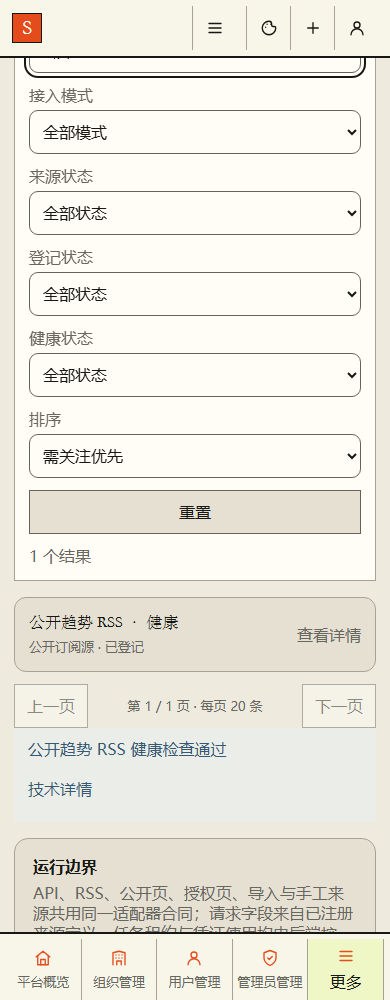
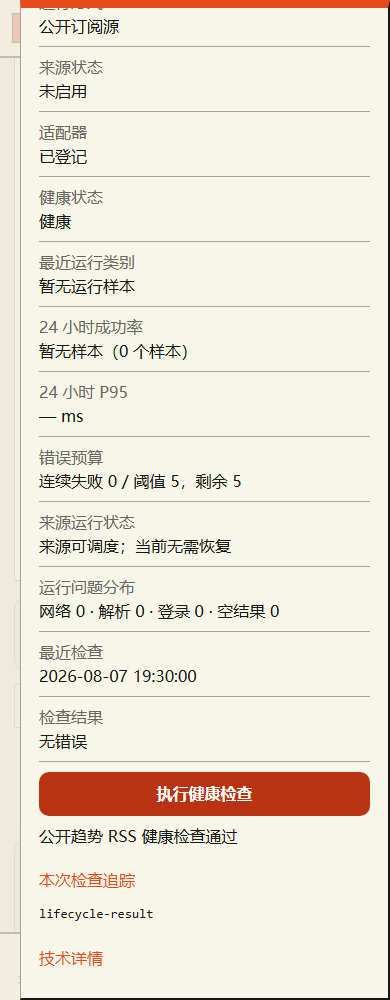
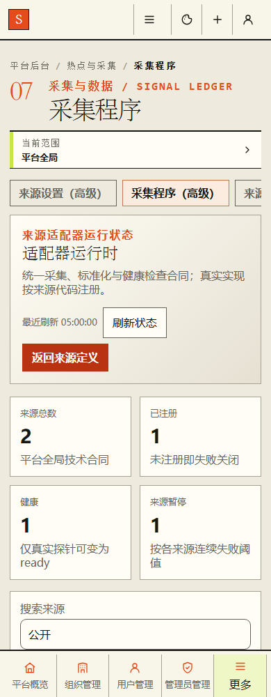
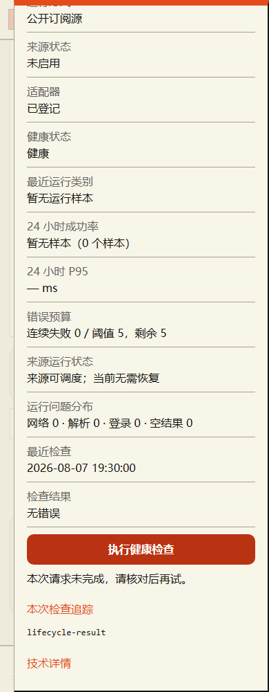
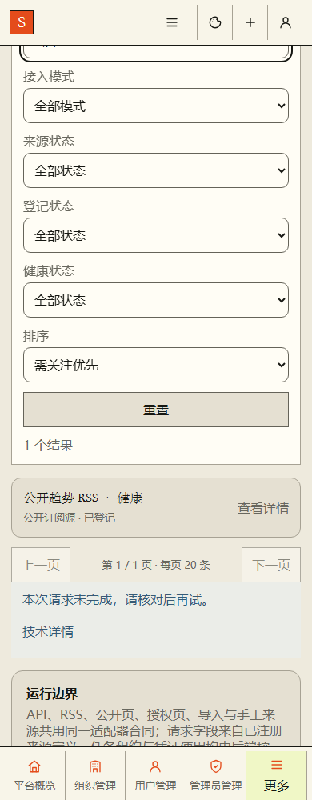

P47缓存切换交互核对
实际生产模板，未注入C样式；只核对缓存返回与反馈，不代表新风格审核。数据为本地隔离样例。
read-success-away · returned
read-success-returned · returned
read-failure-away · returned

read-failure-returned · returned

probe-success-away · returned

probe-success-away · reopened-feedback

probe-success-returned · returned

probe-success-returned · reopened-feedback

probe-failure-away · returned

probe-failure-away · reopened-feedback

probe-failure-returned · returned

probe-failure-returned · reopened-feedback